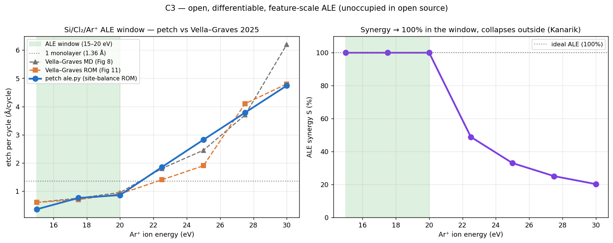
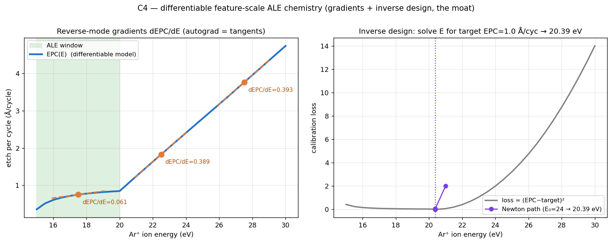
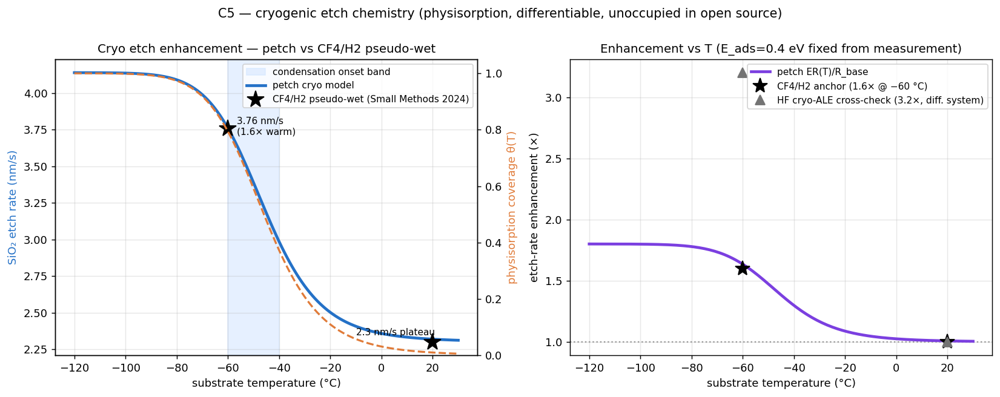
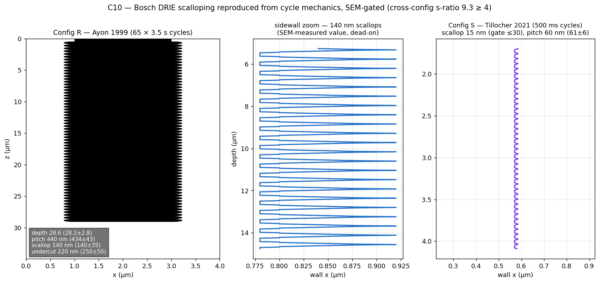

Process modules — ALE, cryo, Bosch, each gated on published data
Three etch processes no open simulator ships with quantitative gates: Atomic Layer Etching, cryogenic etch chemistry, and Bosch DRIE scalloping. Every number below is a PASS against a published measurement; nothing is drawn or tuned to fit.
Atomic Layer Etching (Si/Cl₂/Ar⁺) — the window emerges
Cyclic self-limiting etch as a three-layer site-balance model (Vella–Graves 2025, all constants from their MD fits — nothing of ours tuned). The 15–20 eV ALE window, the loss of self-limitation above 20 eV, the Kanarik synergy collapse, and the dose-saturation dynamics (EPC stops growing below 10¹⁸ cm⁻² — the defining ALE behavior) all emerge from the yield physics.

Differentiable chemistry — inverse design demonstrated
The same ALE model re-expressed with reverse-mode autodiff: exact gradients of etch-per-cycle through the full cyclic chemistry (autograd matches finite differences to four decimals), and gradient-based inverse design — solve for the ion energy that hits a target etch rate in ~15 Newton steps. No closed tool can do this (you cannot backprop through a binary); no open tool has the chemistry.

Cryogenic etch — temperature-gated physisorption
Below ~0 °C a condensed etchant layer builds on the surface (residence time ~eE₀/kT, E₀ = 0.4 eV measured, not fitted) and multiplies the etch rate. Gate: the CF₄/H₂ pseudo-wet SiO₂ curve — 2.3 nm/s warm plateau → 3.76 nm/s at −60 °C (the true published anchor is 1.6×; the folk “2×” is wrong and we gate on truth). Cross-checked against two independent cryo systems.

Bosch DRIE — SEM-measured silicon, reproduced
The time-multiplexed deep-silicon process: passivate, punch through, etch, repeat — leaving the signature sidewall scallops. The cycle mechanics were forced by the data: the naive simultaneous-etch model provably gives 32 nm scallops; the sequential punch-then-iso mechanics predicts 140 nm analytically — exactly what Ayon’s 1999 SEMs measure. All four published gates pass simultaneously (depth 28.6/28.2 µm, pitch 440/434 nm, scallop 140/140 nm, undercut 220/250 nm), the ultrafast smooth regime lands (15 nm scallops, gate ≤30), and the cross-regime scaling kill-test passes at 9.3× (gate ≥4).

Positioning. To our knowledge this is the first open, quantitatively SEM-gated, forward-predictive Bosch scallop model (ViennaPS’s example is demonstrative and ungated; the 2026 VLSet-AE work is an inverse measurement model, cited and distinguished), and the first open differentiable ALE. The pattern is the product: emergent behavior gated against published measurement, with provenance you can read.